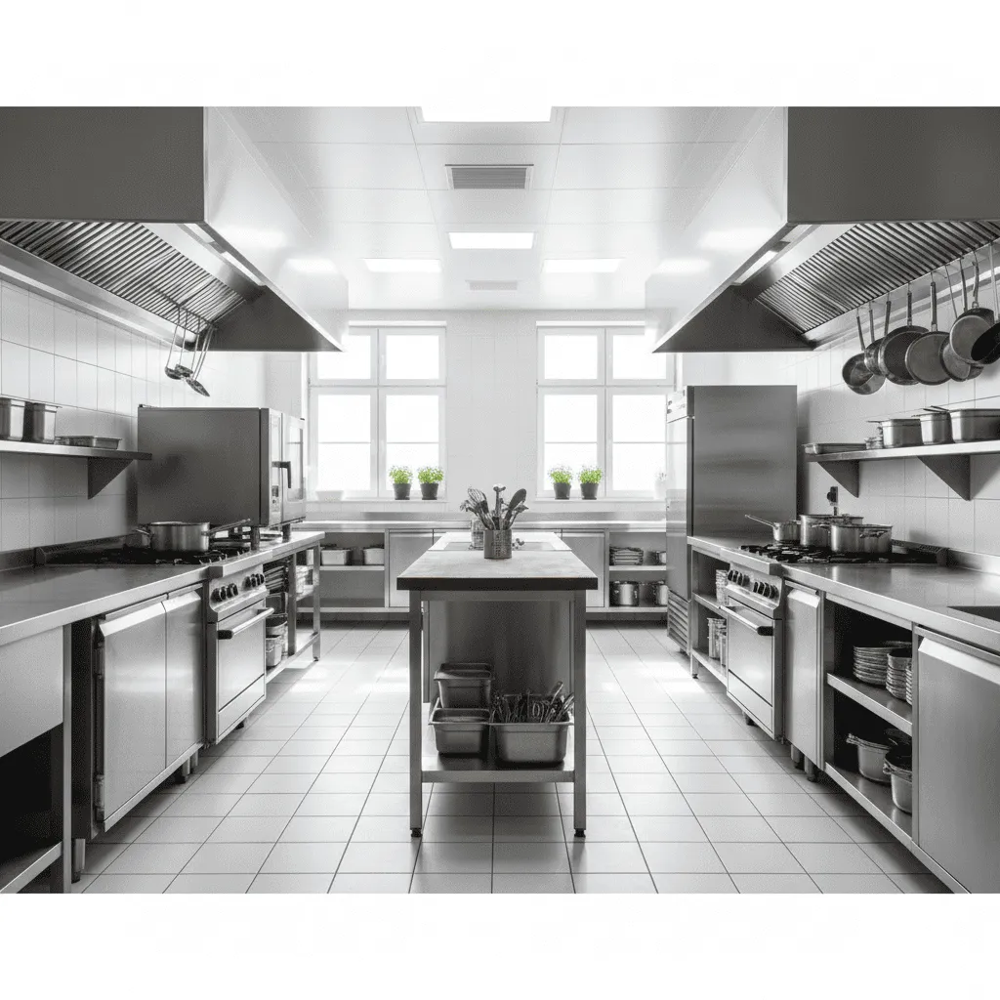
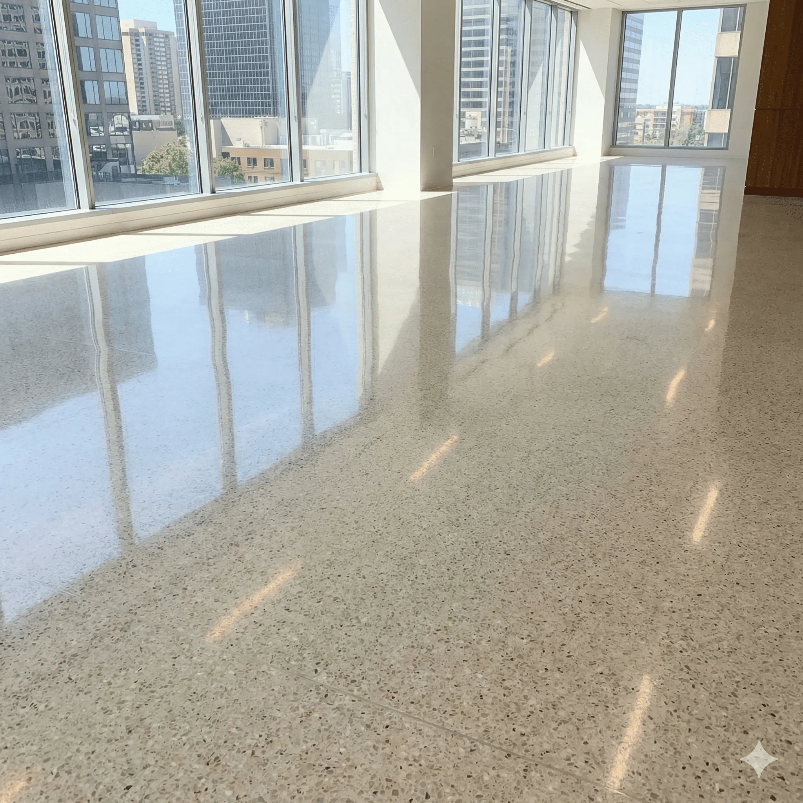

서비스 목록
현장 유형에 맞춰 필요한 서비스를 한 페이지에서 확인하고 상세 안내로 이동할 수 있습니다.
전체 서비스
이미지, 설명, 상세 페이지를 기준으로 정리된 목록입니다.

사무실 정기청소
업무 동선을 고려해 주기적으로 작업해 근무 환경을 안정적으로 유지합니다.
상세 보기상업공간 정기케어
매장 운영 시간과 고객 동선을 반영해 깔끔한 매장 상태를 유지합니다.
상세 보기
사무실 상업공간 케어
업종별 오염 특성을 반영해 사무실과 상업공간을 체계적으로 정리합니다.
상세 보기
패브릭 케어
섬유 재질에 맞춘 세척으로 카페트, 소파, 매트리스의 오염을 관리합니다.
상세 보기
카페트청소
집중 오염 구역을 중심으로 먼지와 잔여 오염을 단계적으로 제거합니다.
상세 보기
에어컨청소
에어컨 내부 오염을 제거해 냄새와 공기질 문제를 함께 관리합니다.
상세 보기
공기질 개선 솔루션
환기와 오염원 관리 관점에서 실내 공기질 개선 작업을 진행합니다.
상세 보기
베이크아웃 · 냄새제거
신축·리모델링 공간의 잔여 냄새와 공기 중 오염 요소를 정리합니다.
상세 보기
준공청소
마감 분진과 잔여 오염물을 제거해 사용 준비 상태로 정리합니다.
상세 보기입주청소
입주 전 생활 먼지와 잔여 오염을 정리해 바로 사용 가능한 환경을 만듭니다.
상세 보기
공장칸막이청소
설비 주변 분진과 칸막이 오염을 작업 환경에 맞춰 단계적으로 청소합니다.
상세 보기태양광패널청소
패널 표면 오염을 제거해 발전 효율 저하를 줄이고 성능 유지에 도움을 줍니다.
상세 보기필요한 서비스를 찾으셨나요?
상세 페이지를 확인한 뒤 전화 또는 카카오톡으로 일정과 범위를 안내받으실 수 있습니다.